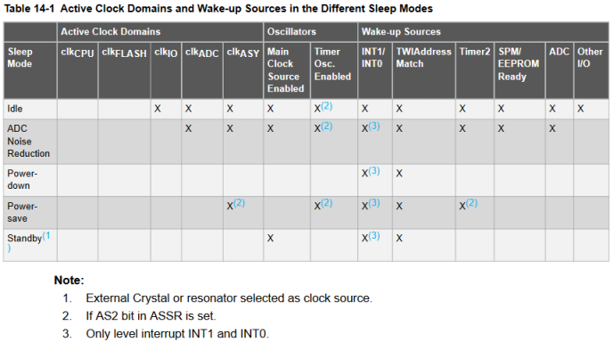
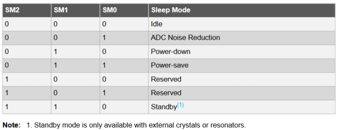

Основной элемент кристалла — полевой транзистор. Он в стабильном режиме практически не потребляет энергии — емкость затвора изолирована и практически не разряжается, сопротивление в открытом состоянии мало. А вот при переключении нам надо очень быстро перезарядить эту емкость. Соответственно, чем быстрее, тем больше тока надо вдуть в затвор. А чем больше ток при постоянном сопротивлении, тем больше потери. И поэтому, чем выше тактовая частота, тем больше энергопотребление. Отсюда вывод — если хотим экономить, то сразу надо снижать частоту.
Память. То же самое — в стабильном режиме практически ничего не потребляет (наноамперы). Основные затраты — при чтении и записи.
Отсюда вывод — остановив процессор, затормозив его часы до нуля, можно снизить энергопотребление кристалла до минимума.
В зависимости от камня, режимов сна может быть от двух до шести. Они отличаются друг от друга крепкостью сна. Чем глубже спишь, тем труднее просыпаться.
В даташите на атмега8а раздел 14. Power Management and Sleep Modes — таблица 14.1

Отметкой Х показаны активные для соответствующего режима параметры и источники пробуждения.
Например, в режиме Standby работает только основной источник тактирования (при условии, что он внешний). Выход из этого режима происходит только при перывании INT1/INT0 и TWIAddress Match.
Режим сна выбирается путем записи соответствующего бита (SM2..SM0) в регистр MCUCR.
Бит SE (Sleep Enable) разрешает уход в спящий режим.

Idle
Режим ожидания (общий для всех моделей). В этом режиме останавливается ЦПУ, а периферия - SPI, USART, Аналоговый компаратор, ADC, TWI, таймеры/счетчики, сторожевой таймер и система прерываний продолжает работать.
ADC Noise Reduction
В этом режиме останавливается процессор, но АЦП, внешние прерывания, TWI, таймер/счетчик2, сторожевой таймер (если включен) продолжают работать. Этот режим служит для уменьшения разных наводок во время преобразования АЦП. Кроме прерывания по завершению преобразования АЦП, микроконтроллер из этого режима энергосбережения может вывести внешний сброс, сброс сторожевым таймером, прерывание TWI, прерывание таймера/счетчика2, прерывание готовности EEPROM, изменение уровня на INT0 или INT1.
Power-down
В этом режиме останавливается внешний генератор и все, что есть в микроконтроллере, кроме сторожевого таймера (если его включить), внешних прерываний и TWI. Только внешний сброс, сброс сторожевым таймером, прерывание TWI или изменение уровня на INT0 или INT1 может разбудить микроконтроллер. Следует учесть, что в этом режиме останавливается тактовый генератор, поэтому чтобы проснуться микроконтроллеру может понадобиться какое-то время. Учитывайте это при разработке программ. Самый экономный режим.
Power-save
Этот режим похож на Power-down mode. Отличается он тем, что если Таймер/счетчик2 работает асинхронно (бит ACCP.AS2 = 1), то он продолжит свою работу и во время сна. Это может пригодиться при реализации часов реального времени на микроконтроллере.
Standby
Этот режим также похож на режим Power-down mode. Но в этом режиме тактовый генератор продолжает работать (если установлен внешний кварц). Из этого режима МК просыпается за 6 тактов.